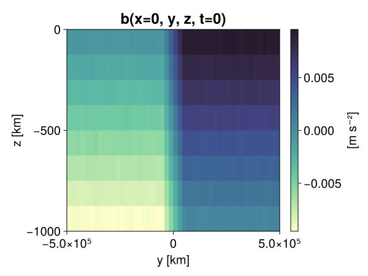
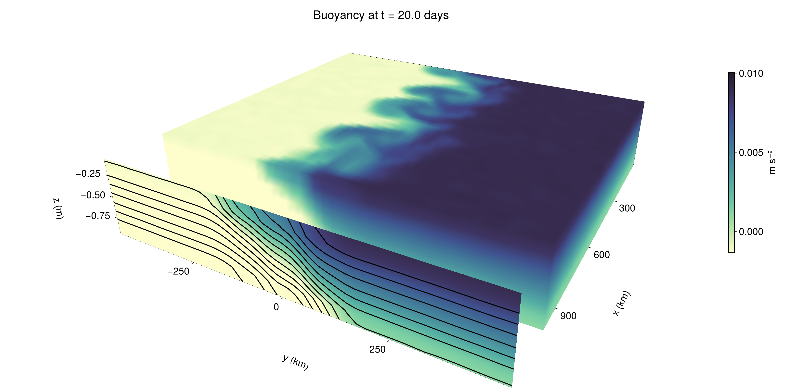

Baroclinic adjustment
In this example, we simulate the evolution and equilibration of a baroclinically unstable front.
Install dependencies
First let's make sure we have all required packages installed.
using Pkg
pkg"add Oceananigans, CairoMakie"using Oceananigans
using Oceananigans.UnitsGrid
We use a three-dimensional channel that is periodic in the x direction:
Lx = 1000kilometers # east-west extent [m]
Ly = 1000kilometers # north-south extent [m]
Lz = 1kilometers # depth [m]
grid = RectilinearGrid(size = (48, 48, 8),
x = (0, Lx),
y = (-Ly/2, Ly/2),
z = (-Lz, 0),
topology = (Periodic, Bounded, Bounded))48×48×8 RectilinearGrid{Float64, Periodic, Bounded, Bounded} on CPU with 3×3×3 halo
├── Periodic x ∈ [0.0, 1.0e6) regularly spaced with Δx=20833.3
├── Bounded y ∈ [-500000.0, 500000.0] regularly spaced with Δy=20833.3
└── Bounded z ∈ [-1000.0, 0.0] regularly spaced with Δz=125.0Model
We built a HydrostaticFreeSurfaceModel with an ImplicitFreeSurface solver. Regarding Coriolis, we use a beta-plane centered at 45° South.
model = HydrostaticFreeSurfaceModel(; grid,
coriolis = BetaPlane(latitude = -45),
buoyancy = BuoyancyTracer(),
tracers = :b,
momentum_advection = WENO(),
tracer_advection = WENO())HydrostaticFreeSurfaceModel{CPU, RectilinearGrid}(time = 0 seconds, iteration = 0)
├── grid: 48×48×8 RectilinearGrid{Float64, Periodic, Bounded, Bounded} on CPU with 3×3×3 halo
├── timestepper: QuasiAdamsBashforth2TimeStepper
├── tracers: b
├── closure: Nothing
├── buoyancy: BuoyancyTracer with ĝ = NegativeZDirection()
├── free surface: ImplicitFreeSurface with gravitational acceleration 9.80665 m s⁻²
│ └── solver: FFTImplicitFreeSurfaceSolver
├── advection scheme:
│ ├── momentum: WENO{3, Float64, Float32}(order=5)
│ └── b: WENO{3, Float64, Float32}(order=5)
└── coriolis: BetaPlane{Float64}We start our simulation from rest with a baroclinically unstable buoyancy distribution. We use ramp(y, Δy), defined below, to specify a front with width Δy and horizontal buoyancy gradient M². We impose the front on top of a vertical buoyancy gradient N² and a bit of noise.
"""
ramp(y, Δy)
Linear ramp from 0 to 1 between -Δy/2 and +Δy/2.
For example:
```
y < -Δy/2 => ramp = 0
-Δy/2 < y < -Δy/2 => ramp = y / Δy
y > Δy/2 => ramp = 1
```
"""
ramp(y, Δy) = min(max(0, y/Δy + 1/2), 1)
N² = 1e-5 # [s⁻²] buoyancy frequency / stratification
M² = 1e-7 # [s⁻²] horizontal buoyancy gradient
Δy = 100kilometers # width of the region of the front
Δb = Δy * M² # buoyancy jump associated with the front
ϵb = 1e-2 * Δb # noise amplitude
bᵢ(x, y, z) = N² * z + Δb * ramp(y, Δy) + ϵb * randn()
set!(model, b=bᵢ)Let's visualize the initial buoyancy distribution.
using CairoMakie
set_theme!(Theme(fontsize = 20))
# Build coordinates with units of kilometers
x, y, z = 1e-3 .* nodes(grid, (Center(), Center(), Center()))
b = model.tracers.b
fig, ax, hm = heatmap(view(b, 1, :, :),
colormap = :deep,
axis = (xlabel = "y [km]",
ylabel = "z [km]",
title = "b(x=0, y, z, t=0)",
titlesize = 24))
Colorbar(fig[1, 2], hm, label = "[m s⁻²]")
fig
Simulation
Now let's build a Simulation.
simulation = Simulation(model, Δt=20minutes, stop_time=20days)Simulation of HydrostaticFreeSurfaceModel{CPU, RectilinearGrid}(time = 0 seconds, iteration = 0)
├── Next time step: 20 minutes
├── Elapsed wall time: 0 seconds
├── Wall time per iteration: NaN days
├── Stop time: 20 days
├── Stop iteration: Inf
├── Wall time limit: Inf
├── Minimum relative step: 0.0
├── Callbacks: OrderedDict with 4 entries:
│ ├── stop_time_exceeded => 4
│ ├── stop_iteration_exceeded => -
│ ├── wall_time_limit_exceeded => e
│ └── nan_checker => }
├── Output writers: OrderedDict with no entries
└── Diagnostics: OrderedDict with no entriesWe add a TimeStepWizard callback to adapt the simulation's time-step,
conjure_time_step_wizard!(simulation, IterationInterval(20), cfl=0.2, max_Δt=20minutes)Also, we add a callback to print a message about how the simulation is going,
using Printf
wall_clock = Ref(time_ns())
function print_progress(sim)
u, v, w = model.velocities
progress = 100 * (time(sim) / sim.stop_time)
elapsed = (time_ns() - wall_clock[]) / 1e9
@printf("[%05.2f%%] i: %d, t: %s, wall time: %s, max(u): (%6.3e, %6.3e, %6.3e) m/s, next Δt: %s\n",
progress, iteration(sim), prettytime(sim), prettytime(elapsed),
maximum(abs, u), maximum(abs, v), maximum(abs, w), prettytime(sim.Δt))
wall_clock[] = time_ns()
return nothing
end
add_callback!(simulation, print_progress, IterationInterval(100))Diagnostics/Output
Here, we save the buoyancy, $b$, at the edges of our domain as well as the zonal ($x$) average of buoyancy.
u, v, w = model.velocities
ζ = ∂x(v) - ∂y(u)
B = Average(b, dims=1)
U = Average(u, dims=1)
V = Average(v, dims=1)
filename = "baroclinic_adjustment"
save_fields_interval = 0.5day
slicers = (east = (grid.Nx, :, :),
north = (:, grid.Ny, :),
bottom = (:, :, 1),
top = (:, :, grid.Nz))
for side in keys(slicers)
indices = slicers[side]
simulation.output_writers[side] = JLD2Writer(model, (; b, ζ);
filename = filename * "_$(side)_slice",
schedule = TimeInterval(save_fields_interval),
overwrite_existing = true,
indices)
end
simulation.output_writers[:zonal] = JLD2Writer(model, (; b=B, u=U, v=V);
filename = filename * "_zonal_average",
schedule = TimeInterval(save_fields_interval),
overwrite_existing = true)JLD2Writer scheduled on TimeInterval(12 hours):
├── filepath: baroclinic_adjustment_zonal_average.jld2
├── 3 outputs: (b, u, v)
├── array type: Array{Float32}
├── including: [:grid, :coriolis, :buoyancy, :closure]
├── file_splitting: NoFileSplitting
└── file size: 32.5 KiBNow we're ready to run.
@info "Running the simulation..."
run!(simulation)
@info "Simulation completed in " * prettytime(simulation.run_wall_time)[ Info: Running the simulation...
[ Info: Initializing simulation...
[00.00%] i: 0, t: 0 seconds, wall time: 31.679 seconds, max(u): (0.000e+00, 0.000e+00, 0.000e+00) m/s, next Δt: 20 minutes
[ Info: ... simulation initialization complete (28.834 seconds)
[ Info: Executing initial time step...
[ Info: ... initial time step complete (20.942 seconds).
[06.94%] i: 100, t: 1.389 days, wall time: 42.824 seconds, max(u): (1.290e-01, 1.175e-01, 1.720e-03) m/s, next Δt: 20 minutes
[13.89%] i: 200, t: 2.778 days, wall time: 800.904 ms, max(u): (2.366e-01, 2.014e-01, 1.770e-03) m/s, next Δt: 20 minutes
[20.83%] i: 300, t: 4.167 days, wall time: 739.642 ms, max(u): (3.061e-01, 2.894e-01, 2.081e-03) m/s, next Δt: 20 minutes
[27.78%] i: 400, t: 5.556 days, wall time: 786.062 ms, max(u): (3.706e-01, 4.225e-01, 2.265e-03) m/s, next Δt: 20 minutes
[34.72%] i: 500, t: 6.944 days, wall time: 734.960 ms, max(u): (4.612e-01, 5.171e-01, 2.211e-03) m/s, next Δt: 20 minutes
[41.67%] i: 600, t: 8.333 days, wall time: 715.387 ms, max(u): (6.130e-01, 7.555e-01, 2.970e-03) m/s, next Δt: 20 minutes
[48.61%] i: 700, t: 9.722 days, wall time: 708.761 ms, max(u): (9.046e-01, 1.052e+00, 4.662e-03) m/s, next Δt: 20 minutes
[55.56%] i: 800, t: 11.111 days, wall time: 723.396 ms, max(u): (1.331e+00, 1.221e+00, 4.918e-03) m/s, next Δt: 20 minutes
[62.50%] i: 900, t: 12.500 days, wall time: 663.188 ms, max(u): (1.532e+00, 1.177e+00, 5.189e-03) m/s, next Δt: 20 minutes
[69.44%] i: 1000, t: 13.889 days, wall time: 739.032 ms, max(u): (1.287e+00, 1.102e+00, 4.068e-03) m/s, next Δt: 20 minutes
[76.39%] i: 1100, t: 15.278 days, wall time: 751.324 ms, max(u): (1.245e+00, 9.012e-01, 2.556e-03) m/s, next Δt: 20 minutes
[83.33%] i: 1200, t: 16.667 days, wall time: 731.093 ms, max(u): (1.248e+00, 8.735e-01, 2.908e-03) m/s, next Δt: 20 minutes
[90.28%] i: 1300, t: 18.056 days, wall time: 835.404 ms, max(u): (1.275e+00, 8.599e-01, 2.357e-03) m/s, next Δt: 20 minutes
[97.22%] i: 1400, t: 19.444 days, wall time: 689.709 ms, max(u): (1.356e+00, 9.410e-01, 2.237e-03) m/s, next Δt: 20 minutes
[ Info: Simulation is stopping after running for 1.064 minutes.
[ Info: Simulation time 20 days equals or exceeds stop time 20 days.
[ Info: Simulation completed in 1.064 minutes
Visualization
All that's left is to make a pretty movie. Actually, we make two visualizations here. First, we illustrate how to make a 3D visualization with Makie's Axis3 and Makie.surface. Then we make a movie in 2D. We use CairoMakie in this example, but note that using GLMakie is more convenient on a system with OpenGL, as figures will be displayed on the screen.
using CairoMakieThree-dimensional visualization
We load the saved buoyancy output on the top, north, and east surface as FieldTimeSerieses.
filename = "baroclinic_adjustment"
sides = keys(slicers)
slice_filenames = NamedTuple(side => filename * "_$(side)_slice.jld2" for side in sides)
b_timeserieses = (east = FieldTimeSeries(slice_filenames.east, "b"),
north = FieldTimeSeries(slice_filenames.north, "b"),
top = FieldTimeSeries(slice_filenames.top, "b"))
B_timeseries = FieldTimeSeries(filename * "_zonal_average.jld2", "b")
times = B_timeseries.times
grid = B_timeseries.grid48×48×8 RectilinearGrid{Float64, Periodic, Bounded, Bounded} on CPU with 3×3×3 halo
├── Periodic x ∈ [0.0, 1.0e6) regularly spaced with Δx=20833.3
├── Bounded y ∈ [-500000.0, 500000.0] regularly spaced with Δy=20833.3
└── Bounded z ∈ [-1000.0, 0.0] regularly spaced with Δz=125.0We build the coordinates. We rescale horizontal coordinates to kilometers.
xb, yb, zb = nodes(b_timeserieses.east)
xb = xb ./ 1e3 # convert m -> km
yb = yb ./ 1e3 # convert m -> km
Nx, Ny, Nz = size(grid)
x_xz = repeat(x, 1, Nz)
y_xz_north = y[end] * ones(Nx, Nz)
z_xz = repeat(reshape(z, 1, Nz), Nx, 1)
x_yz_east = x[end] * ones(Ny, Nz)
y_yz = repeat(y, 1, Nz)
z_yz = repeat(reshape(z, 1, Nz), grid.Ny, 1)
x_xy = x
y_xy = y
z_xy_top = z[end] * ones(grid.Nx, grid.Ny)Then we create a 3D axis. We use zonal_slice_displacement to control where the plot of the instantaneous zonal average flow is located.
fig = Figure(size = (1600, 800))
zonal_slice_displacement = 1.2
ax = Axis3(fig[2, 1],
aspect=(1, 1, 1/5),
xlabel = "x (km)",
ylabel = "y (km)",
zlabel = "z (m)",
xlabeloffset = 100,
ylabeloffset = 100,
zlabeloffset = 100,
limits = ((x[1], zonal_slice_displacement * x[end]), (y[1], y[end]), (z[1], z[end])),
elevation = 0.45,
azimuth = 6.8,
xspinesvisible = false,
zgridvisible = false,
protrusions = 40,
perspectiveness = 0.7)Axis3()We use data from the final savepoint for the 3D plot. Note that this plot can easily be animated by using Makie's Observable. To dive into Observables, check out Makie.jl's Documentation.
n = length(times)41Now let's make a 3D plot of the buoyancy and in front of it we'll use the zonally-averaged output to plot the instantaneous zonal-average of the buoyancy.
b_slices = (east = interior(b_timeserieses.east[n], 1, :, :),
north = interior(b_timeserieses.north[n], :, 1, :),
top = interior(b_timeserieses.top[n], :, :, 1))
# Zonally-averaged buoyancy
B = interior(B_timeseries[n], 1, :, :)
clims = 1.1 .* extrema(b_timeserieses.top[n][:])
kwargs = (colorrange=clims, colormap=:deep, shading=NoShading)
surface!(ax, x_yz_east, y_yz, z_yz; color = b_slices.east, kwargs...)
surface!(ax, x_xz, y_xz_north, z_xz; color = b_slices.north, kwargs...)
surface!(ax, x_xy, y_xy, z_xy_top; color = b_slices.top, kwargs...)
sf = surface!(ax, zonal_slice_displacement .* x_yz_east, y_yz, z_yz; color = B, kwargs...)
contour!(ax, y, z, B; transformation = (:yz, zonal_slice_displacement * x[end]),
levels = 15, linewidth = 2, color = :black)
Colorbar(fig[2, 2], sf, label = "m s⁻²", height = Relative(0.4), tellheight=false)
title = "Buoyancy at t = " * string(round(times[n] / day, digits=1)) * " days"
fig[1, 1:2] = Label(fig, title; fontsize = 24, tellwidth = false, padding = (0, 0, -120, 0))
rowgap!(fig.layout, 1, Relative(-0.2))
colgap!(fig.layout, 1, Relative(-0.1))
save("baroclinic_adjustment_3d.png", fig)
Two-dimensional movie
We make a 2D movie that shows buoyancy $b$ and vertical vorticity $ζ$ at the surface, as well as the zonally-averaged zonal and meridional velocities $U$ and $V$ in the $(y, z)$ plane. First we load the FieldTimeSeries and extract the additional coordinates we'll need for plotting
ζ_timeseries = FieldTimeSeries(slice_filenames.top, "ζ")
U_timeseries = FieldTimeSeries(filename * "_zonal_average.jld2", "u")
B_timeseries = FieldTimeSeries(filename * "_zonal_average.jld2", "b")
V_timeseries = FieldTimeSeries(filename * "_zonal_average.jld2", "v")
xζ, yζ, zζ = nodes(ζ_timeseries)
yv = ynodes(V_timeseries)
xζ = xζ ./ 1e3 # convert m -> km
yζ = yζ ./ 1e3 # convert m -> km
yv = yv ./ 1e3 # convert m -> km-500.0:20.833333333333332:500.0Next, we set up a plot with 4 panels. The top panels are large and square, while the bottom panels get a reduced aspect ratio through rowsize!.
fig = Figure(size=(1800, 1000))
axb = Axis(fig[1, 2], xlabel="x (km)", ylabel="y (km)", aspect=1)
axζ = Axis(fig[1, 3], xlabel="x (km)", ylabel="y (km)", aspect=1, yaxisposition=:right)
axu = Axis(fig[2, 2], xlabel="y (km)", ylabel="z (m)")
axv = Axis(fig[2, 3], xlabel="y (km)", ylabel="z (m)", yaxisposition=:right)
rowsize!(fig.layout, 2, Relative(0.3))To prepare a plot for animation, we index the timeseries with an Observable,
n = Observable(1)
b_top = @lift interior(b_timeserieses.top[$n], :, :, 1)
ζ_top = @lift interior(ζ_timeseries[$n], :, :, 1)
U = @lift interior(U_timeseries[$n], 1, :, :)
V = @lift interior(V_timeseries[$n], 1, :, :)
B = @lift interior(B_timeseries[$n], 1, :, :)Observable([-0.00939034204930067 -0.008150308392941952 -0.006883897818624973 -0.0056323762983083725 -0.004367951303720474 -0.003110902849584818 -0.0018512285314500332 -0.0006144343060441315; -0.009377122856676579 -0.008117198944091797 -0.006858943961560726 -0.005616161972284317 -0.004362341016530991 -0.0031305926386266947 -0.0018842271529138088 -0.0006234722095541656; -0.00935437809675932 -0.00811602920293808 -0.006880942732095718 -0.005603089462965727 -0.004383925814181566 -0.0031356853432953358 -0.0018772374605759978 -0.0006455889088101685; -0.00936488714069128 -0.008108499459922314 -0.006897255312651396 -0.005627465900033712 -0.004344215150922537 -0.003125901101157069 -0.0018735472112894058 -0.0006313789053820074; -0.009346995502710342 -0.008113089948892593 -0.0069024995900690556 -0.005625677760690451 -0.004368740599602461 -0.0031257946975529194 -0.0018865377642214298 -0.0005998200504109263; -0.009398432448506355 -0.008112004958093166 -0.006892099045217037 -0.005625992082059383 -0.004361480940133333 -0.0031385752372443676 -0.0018924935720860958 -0.0006260738591663539; -0.00938771478831768 -0.008107737638056278 -0.006889019627124071 -0.005626117344945669 -0.004356257617473602 -0.003134912345558405 -0.0018700321670621634 -0.0006360511179082096; -0.00938872154802084 -0.008122400380671024 -0.006870938464999199 -0.005618626717478037 -0.004357891622930765 -0.0031128027476370335 -0.001884088502265513 -0.000609634502325207; -0.00937683880329132 -0.008133290335536003 -0.006855258718132973 -0.005623455159366131 -0.004378888756036758 -0.0031291635241359472 -0.0018871189095079899 -0.0006386960740201175; -0.009393388405442238 -0.008144691586494446 -0.006888257805258036 -0.0056240735575556755 -0.004375868942588568 -0.0031193553004413843 -0.0018661842914298177 -0.0006294185877777636; -0.009349560365080833 -0.008097837679088116 -0.00688443286344409 -0.005615956615656614 -0.004371799062937498 -0.003111615078523755 -0.001901959185488522 -0.0006375777302309871; -0.009376924484968185 -0.008131266571581364 -0.00687874760478735 -0.005612622015178204 -0.004381159786134958 -0.0031293637584894896 -0.0018490469083189964 -0.0006164066726341844; -0.009374475106596947 -0.008137834258377552 -0.0068834866397082806 -0.005625908263027668 -0.004376082215458155 -0.003109379904344678 -0.0018627705285325646 -0.0006404995801858604; -0.009389779530465603 -0.00812629796564579 -0.006858943495899439 -0.005612303037196398 -0.0043611773289740086 -0.003146473551169038 -0.0018806614680215716 -0.0006201205542311072; -0.009364365600049496 -0.00814894214272499 -0.006867093965411186 -0.005621570628136396 -0.004362109582871199 -0.0031462109182029963 -0.001852194545790553 -0.0005970615311525762; -0.009381253272294998 -0.008119773119688034 -0.006873456295579672 -0.00564810074865818 -0.004357269499450922 -0.003125082701444626 -0.0018903771415352821 -0.0006082856561988592; -0.009396184235811234 -0.008136115036904812 -0.0068524121306836605 -0.0056280819699168205 -0.004389797803014517 -0.003140288172289729 -0.001864879741333425 -0.0006257566856220365; -0.009382044896483421 -0.008130183443427086 -0.006863882299512625 -0.005668033380061388 -0.004357878118753433 -0.0031263192649930716 -0.0018674242310225964 -0.0006338949897326529; -0.00937666092067957 -0.008122645318508148 -0.006852465216070414 -0.005636435933411121 -0.004385230131447315 -0.0031435710843652487 -0.001884431578218937 -0.000608949747402221; -0.009362833574414253 -0.008155245333909988 -0.006849820725619793 -0.0056231883354485035 -0.004401790909469128 -0.0031257299706339836 -0.0018749223090708256 -0.0006070586387068033; -0.009375282563269138 -0.008127961307764053 -0.006887827999889851 -0.005624574143439531 -0.004371606279164553 -0.0031192514579743147 -0.0018642547074705362 -0.000629856251180172; -0.009397853165864944 -0.008112775161862373 -0.0068671549670398235 -0.005627235397696495 -0.004377634264528751 -0.003132007783278823 -0.0018509684596210718 -0.000646995089482516; -0.007498122751712799 -0.006223656237125397 -0.004994744434952736 -0.003737539052963257 -0.0024942131713032722 -0.0012622771319001913 -7.43967029848136e-6 0.0012351892655715346; -0.005409534089267254 -0.004189702216535807 -0.002919010119512677 -0.001679014298133552 -0.00041247389162890613 0.0008469506283290684 0.0020892536267638206 0.003337476635351777; -0.0033478105906397104 -0.0020957051310688257 -0.0008327913237735629 0.00043663455289788544 0.0016369289951398969 0.0029343434143811464 0.004146474413573742 0.0054083578288555145; -0.001254054601304233 -1.0158665645576548e-5 0.001235864358022809 0.0024979705922305584 0.0037576286122202873 0.004985164850950241 0.006256754510104656 0.007488190662115812; 0.000652348855510354 0.0018697358900681138 0.003136211773380637 0.0043716118671 0.0056244689039886 0.006854998413473368 0.00812932476401329 0.009382485412061214; 0.0006334357894957066 0.0018858903786167502 0.0031178509816527367 0.004375859629362822 0.005635777022689581 0.006878355517983437 0.008139380253851414 0.009369028732180595; 0.0006379944970831275 0.001867841579951346 0.003135192207992077 0.004392576403915882 0.005610947031527758 0.0068602184765040874 0.008132469840347767 0.009374338202178478; 0.0006165471277199686 0.0018942690221592784 0.0031030848622322083 0.004361493047326803 0.0056162201799452305 0.006845882628113031 0.008113202638924122 0.009382115676999092; 0.0006204209057614207 0.0018583969213068485 0.003146817209199071 0.004365247208625078 0.005627995822578669 0.006867464631795883 0.008112846873700619 0.009382548741996288; 0.0006262544775381684 0.0018773417687043548 0.0031113880686461926 0.004388256464153528 0.005630156956613064 0.006863711401820183 0.008115448988974094 0.009361113421618938; 0.0006493775872513652 0.001873110537417233 0.0031215078197419643 0.0043954490683972836 0.005633356515318155 0.006888830102980137 0.008140590973198414 0.009370381943881512; 0.0006098042358644307 0.0018693954916670918 0.003138529835268855 0.004374272655695677 0.005596070550382137 0.0068888538517057896 0.008127874694764614 0.009406611323356628; 0.0006216572946868837 0.0018774763448163867 0.003118182998150587 0.00437822425737977 0.005627375561743975 0.006864992436021566 0.00810961239039898 0.009361441247165203; 0.0006301086395978928 0.0018797364318743348 0.003121266607195139 0.004371678456664085 0.005627765320241451 0.006855579558759928 0.008125078864395618 0.009381056763231754; 0.0006213955348357558 0.0018763913540169597 0.003117947606369853 0.004380493424832821 0.005643162876367569 0.006863349582999945 0.008100219070911407 0.009383328258991241; 0.0006162962527014315 0.0018912083469331264 0.0031256540678441525 0.004389860201627016 0.005608700681477785 0.006885410752147436 0.008124909363687038 0.00936364196240902; 0.0006318373489193618 0.0018708788556978106 0.003138997359201312 0.004366034176200628 0.0056348214857280254 0.006883455906063318 0.008099513128399849 0.00937347300350666; 0.0006695109186694026 0.0018821133999153972 0.003113391110673547 0.004354409407824278 0.005598285235464573 0.00685782078653574 0.008137935772538185 0.009353289380669594; 0.0006302803521975875 0.0018810450565069914 0.003113629063591361 0.004381518345326185 0.005631931591778994 0.006877659820020199 0.00808552373200655 0.009375657886266708; 0.0006071897223591805 0.0018782283877953887 0.0031375389080494642 0.0043749213218688965 0.005630574654787779 0.006861744914203882 0.008131038397550583 0.009379537776112556; 0.0006023197202011943 0.0018743614200502634 0.00314740976318717 0.004393591079860926 0.00564495287835598 0.006891999859362841 0.008106781169772148 0.009401003830134869; 0.0006059177685528994 0.0018910587532445788 0.0031074737198650837 0.004395209718495607 0.005618841852992773 0.006888182368129492 0.008137094788253307 0.009347748011350632; 0.0006011397927068174 0.0018533638212829828 0.0031387382186949253 0.0043548657558858395 0.005619327537715435 0.006883819121867418 0.008139099925756454 0.009396563284099102; 0.0006234718021005392 0.0018927011406049132 0.0031300701666623354 0.004380570258945227 0.005642698612064123 0.00691023888066411 0.008152368478477001 0.009363559074699879; 0.0006373320356942713 0.0018874306697398424 0.0031367989722639322 0.004369474947452545 0.005623054224997759 0.006897208746522665 0.00812770426273346 0.009394201450049877; 0.0006281127571128309 0.0018646451644599438 0.003102353774011135 0.004371640272438526 0.0056064133532345295 0.006845854688435793 0.008134476840496063 0.009369002655148506])
and then build our plot:
hm = heatmap!(axb, xb, yb, b_top, colorrange=(0, Δb), colormap=:thermal)
Colorbar(fig[1, 1], hm, flipaxis=false, label="Surface b(x, y) (m s⁻²)")
hm = heatmap!(axζ, xζ, yζ, ζ_top, colorrange=(-5e-5, 5e-5), colormap=:balance)
Colorbar(fig[1, 4], hm, label="Surface ζ(x, y) (s⁻¹)")
hm = heatmap!(axu, yb, zb, U; colorrange=(-5e-1, 5e-1), colormap=:balance)
Colorbar(fig[2, 1], hm, flipaxis=false, label="Zonally-averaged U(y, z) (m s⁻¹)")
contour!(axu, yb, zb, B; levels=15, color=:black)
hm = heatmap!(axv, yv, zb, V; colorrange=(-1e-1, 1e-1), colormap=:balance)
Colorbar(fig[2, 4], hm, label="Zonally-averaged V(y, z) (m s⁻¹)")
contour!(axv, yb, zb, B; levels=15, color=:black)Finally, we're ready to record the movie.
frames = 1:length(times)
record(fig, filename * ".mp4", frames, framerate=8) do i
n[] = i
endThis page was generated using Literate.jl.